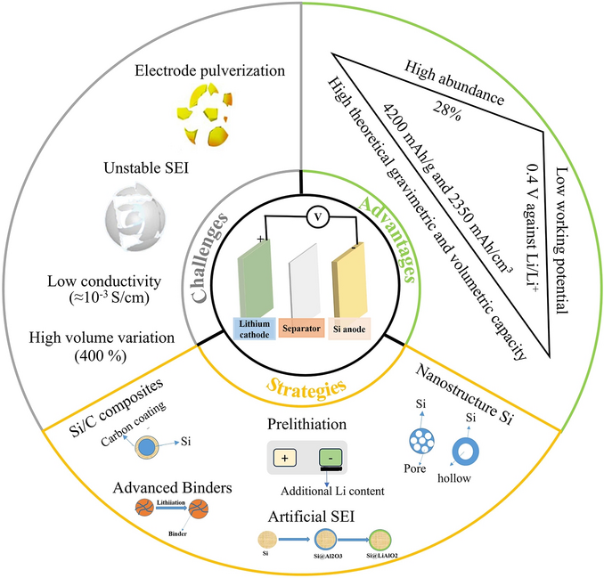
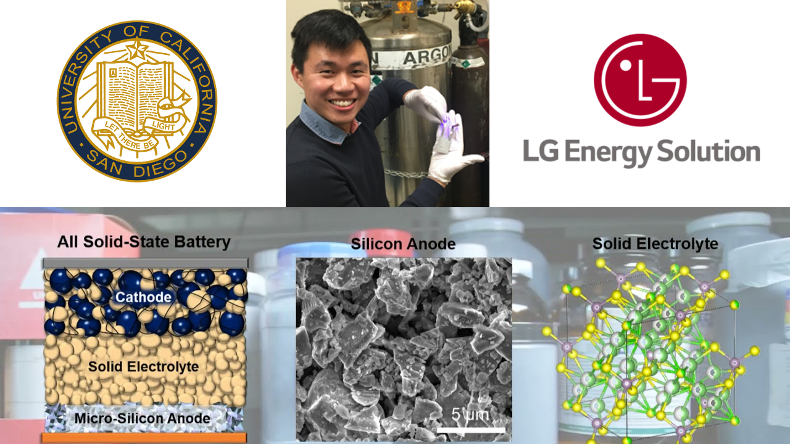
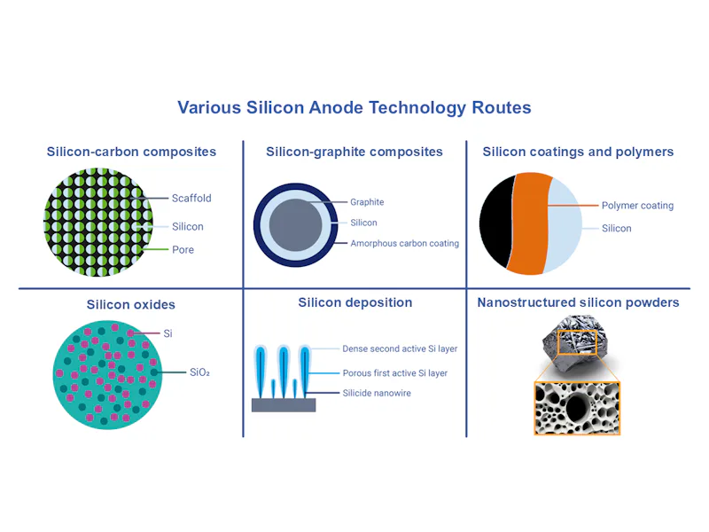
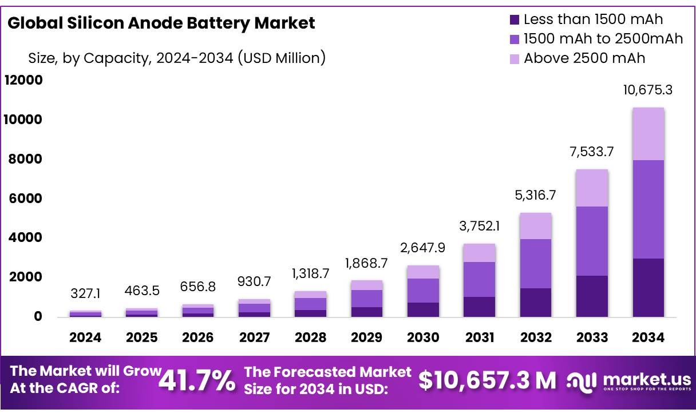
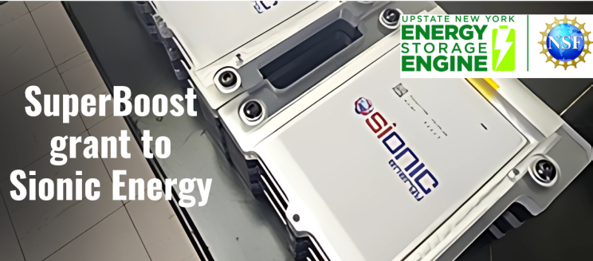
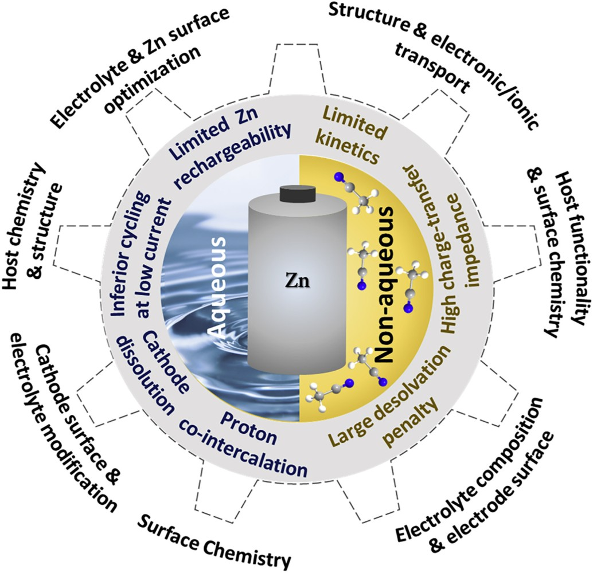
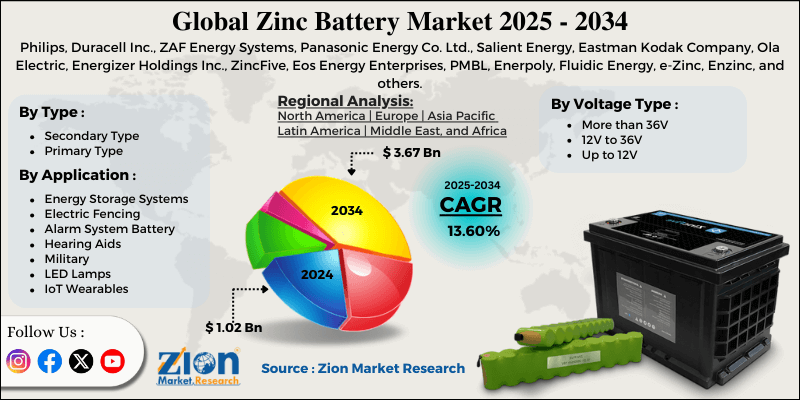
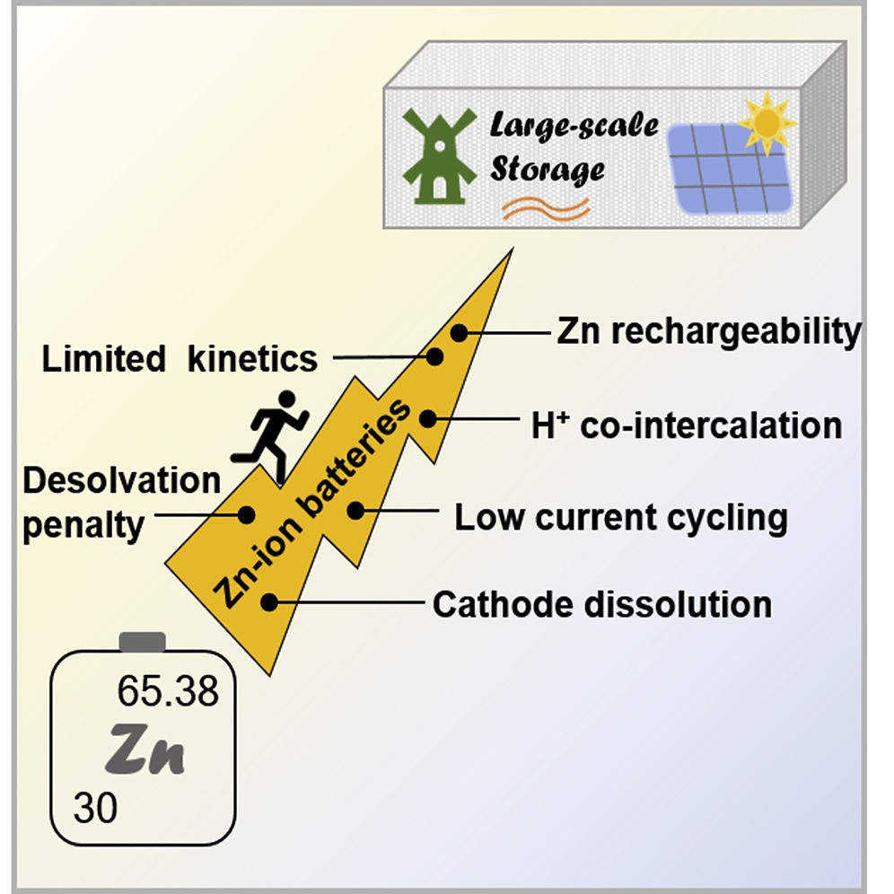

The battery technology landscape is experiencing a transformative period as traditional lithium-ion systems approach their theoretical limits and new applications demand unprecedented energy densities and performance characteristics. Silicon anodes represent the most promising near-term advancement, offering capacity improvements of nearly tenfold over conventional graphite anodes, while zinc-ion batteries emerge as a compelling alternative for large-scale energy storage applications.
Market forecasts indicate the silicon anode sector alone could exceed $15 billion by 2035, driven by automotive electrification and consumer electronics demands. However, both technologies face significant technical challenges that must be overcome before widespread commercialization, including volume expansion issues in silicon systems and fundamental research gaps in zinc-ion chemistry.
The Silicon Revolution: Unlocking Unprecedented Energy Density
Fundamentals and Theoretical Promise
Silicon anodes represent perhaps the most significant advancement in lithium-ion battery technology since the introduction of graphite electrodes. The fundamental advantage of silicon lies in its electrochemical reaction mechanism with lithium, which occurs through intermetallic alloying rather than intercalation. This process enables silicon to deliver an extraordinary theoretical capacity of 3,600 mAh/g, nearly ten times higher than graphite's 372 mAh/g capacity. The implications of this capacity enhancement are profound for battery energy density, with silicon-based anodes potentially improving overall battery energy density by at least 30% compared to current values.

The market recognition of silicon's potential is reflected in aggressive growth projections. IDTechEx forecasts the global silicon anode market to grow at a compound annual growth rate of 31.1% from 2025 to 2035, reaching over $15 billion by the forecast period's end. This growth trajectory is driven primarily by demand from battery electric vehicles, commercial electric vehicles, and electronic devices, all of which require higher energy density solutions to meet evolving performance requirements.
Current commercial implementations of silicon anodes typically incorporate silicon at relatively modest weight percentages of 3-8% in composite materials. Even these limited silicon additions provide measurable performance improvements while managing the technical challenges associated with pure silicon electrodes. The strategic approach of gradual silicon incorporation allows manufacturers to gain experience with the technology while developing solutions for the more significant challenges associated with higher silicon content formulations.
Technical Challenges and Engineering Solutions
The primary obstacle preventing widespread silicon anode adoption is the dramatic volume expansion that occurs during lithiation. Silicon particles undergo volume changes of up to 300% during the charging and discharging cycles, compared to graphite's modest 13% expansion.
Research institutions and companies have developed various strategies to address these challenges. The UC San Diego Jacobs School of Engineering in collaboration with LG Energy Solution , has pioneered a solid-state silicon battery design that uses sulfate solid-state electrolytes to stabilize a 99.9% weight microsilicon anode.

The elimination of carbon from the anode composition represents another critical advancement in silicon battery technology. Traditional lithium-ion batteries use carbon content between 20-40% by weight in the anode. Carbon-free silicon anodes prevent these degradation mechanisms and allow the SEI to stabilize more quickly.
Performance Achievements and Commercial Readiness
Recent laboratory demonstrations have validated many theoretical advantages of silicon anodes under controlled conditions. The UCSD/LG Energy Solutions prototype achieved high energy density with low capacity degradation over hundreds of charging cycles and enabled lower charging temperatures compared to metallic lithium batteries. The silicon anode configuration demonstrated an initial voltage plateau of 3.5V compared to 2.5V for carbon anodes when tested with NCM811 cathode.

Manufacturing considerations for silicon anodes involve sophisticated material engineering approaches. Companies are exploring multiple silicon material designs including silicon-carbon composites, silicon-graphite composites, silicon deposition techniques, silicon oxide formulations, nanostructured silicon, and silicon polymer coating systems. Each approach offers different trade-offs between performance enhancement, manufacturing complexity, and cost considerations.
Commercialization and Market Impact: Current Status, Key Players
The global silicon anode battery market is poised for remarkable growth, with projections indicating an expansion from USD 327.1 million in 2024 to approximately USD 10,675.3 million by 2034, reflecting a robust compound annual growth rate (CAGR) of 41.7%. IDTechEx forecasts the market to surpass US$15 billion by 2035, with a CAGR of 31.1% from 2025-2035.

Key Players and Milestones:
Sila Nanotechnologies, Inc. : Actively scaling up production of advanced silicon-based anode materials (branded Titan Silicon) in the U.S., a strategic move to reduce reliance on foreign supply chains. They claim their material can increase the energy capacity of lithium-ion batteries by 25%, with future potential for up to 40%.
Amprius Technologies, Inc. : Specializes in high-capacity silicon anodes utilizing a proprietary silicon nanowire structure (e.g., SiMaxx, SiCore). They offer the highest commercially available energy density, targeting high-performance EVs, aviation (drones, eVTOLs), and defense applications.
Group14 Technologies : A major manufacturer of advanced silicon battery materials. They have supplied material to Molicel for cells achieving 265 Wh/kg and 714 Wh/l, capable of a 12-minute charge. Group14 has also partnered with BASF to develop a market-ready silicon battery solution, optimizing their SCC55 material with BASFs Licity 2698 X F binder for enhanced durability.
Enevate Corporation : Dedicated to developing silicon-dominant composite anodes specifically for ultra-fast charging lithium-ion batteries, particularly for electric vehicles.
Sion Power Corporation : While primarily focused on lithium-metal anode technology (Licerion®), Sion Power explicitly states their technology doubles energy density, surpassing graphite and silicon anode solutions. This highlights silicon as the current benchmark for high-performance anodes that lithium-metal aims to exceed, underscoring silicons significance.
Solidion Technology Inc. (NASDAQ: $STI) : Has filed multiple patent applications for an innovative process to produce silane-free, graphene ball-hosted silicon anode materials, addressing key cost and safety concerns.
LeydenJar : Offers pure silicon anodes that are compatible with existing lithium-ion battery manufacturing lines, claiming impressive energy densities of 1350 Wh/L or 390 Wh/kg. nbsp; ProLogium: Is developing silicon composite anode technology capable of achieving a 5% to 80% charge in a remarkable 8.5 minutes.
Government Initiatives: The U.S. Department of Energy (DOE) has set an ambitious goal of 500 Wh/kg energy density for EV batteries through its Battery500 Consortium program. The NSF Energy Storage Engine in Upstate New York, led by Binghamton University with Cornell, has awarded grants (e.g., SuperBoost grant to Sionic Energy) to accelerate the development and commercialization of 100% silicon lithium-ion battery platforms, aiming to reduce development cycles from over five years to under two.

Zinc-ion Batteries: An Alternative Path Forward
Fundamental Technology and Advantages
Zinc-ion batteries represent a fundamentally different approach to energy storage that addresses many limitations of lithium-ion technology through alternative chemistry and design principles. ZIBs utilize zinc ions (Zn²⁺) as charge carriers, with zinc metal serving as the anode, zinc-intercalating materials as the cathode, and zinc-containing electrolytes. This configuration offers several inherent advantages over lithium-ion systems, particularly for large-scale applications.
The safety profile of zinc-ion batteries represents a significant advantage over lithium-ion technology. ZIBs are compatible with aqueous electrolytes, which eliminates many fire and explosion risks associated with organic electrolyte systems used in lithium-ion batteries. This safety advantage makes zinc-ion batteries particularly attractive for grid-scale energy storage applications where safety considerations are paramount.

Cost considerations favor zinc-ion batteries for large-scale applications due to the abundant availability and low cost of zinc materials compared to lithium. Zinc is significantly more abundant in the Earth's crust than lithium, and existing zinc mining and refining infrastructure can support battery applications with minimal additional investment. The aqueous electrolyte systems used in zinc-ion batteries also reduce manufacturing costs and environmental concerns compared to organic electrolyte systems.
Technical Challenges and Research Directions
Despite their advantages, zinc-ion batteries face significant technical challenges that currently prevent widespread commercialization. Research challenges exist at multiple levels of the battery system, including anode optimization, electrolyte development, and cathode material advancement. The complexity of these challenges requires coordinated research efforts across multiple scientific disciplines.
Anode-related challenges in zinc-ion batteries include zinc dendrite formation during charging cycles, which can lead to short circuits and capacity loss over time. Electrolyte optimization involves balancing ionic conductivity, electrochemical stability, and compatibility with both anode and cathode materials. Cathode development focuses on identifying and optimizing zinc-intercalating materials that provide high capacity, good rate capability, and long cycle life.
Commercial Outlook and Applications: Market Growth, Leading Companies, and Focus on Grid-Scale Storage
The global zinc-ion batteries market is projected for steady growth, with a Compound Annual Growth Rate (CAGR) of 4.9% from 2025 to 2031, reaching an estimated $467.1 million by 2032. While this growth rate is distinct from the more explosive projections for silicon anodes, it reflects a different market niche and a technology still in earlier stages of broad commercialization compared to mature LIBs.

Eos Energy Enterprises, Inc. : A leading U.S.-based provider of safe, scalable, zinc-based long-duration energy storage systems (Znyth™ aqueous zinc battery) for 3-12 hour applications. Eos successfully launched commercial production on its first state-of-the-art manufacturing line in July 2024, with plans to ramp annualized capacity to 1.25 GWh and further expand to 2 GWh. The company has also secured significant strategic investments.
Enerpoly : This Swedish startup, specializing in zinc-ion battery storage systems, acquired former competitor Nilars full cell production and pack assembly lines. Enerpoly plans to scale its production up to 100 MWh per year by 2026 to meet increasing demand.
ZincFive, Inc. : A prominent player advancing nickel-zinc battery technology, particularly in the data center sector for UPS applications. They are accelerating investment in U.S. manufacturing.
Redflow : Expanding the deployment of their X10 next-generation battery (likely a zinc-bromine flow battery) through a partnership with Stanwell.
e-Zinc : Successfully raised USD $31 million in Series A2 funding to commercialize its innovative zinc-air battery technology for large-scale, long-duration energy storage.
Abound Energy (formerly Zinc8): Received a significant purchase order for a 15 MWh system, indicating growing market demand for its zinc-based solutions.
Government Support: The U.S. Department of Energy (DOE) has awarded grants (e.g., $2 million to prize winners like Urban Electric Power) to support domestic clean energy manufacturing facilities, aiming to establish zinc batteries as a U.S. made battery technology. The India-Japan Conclave also highlighted Indias leadership in renewables and investment opportunities for ZIBs.
Comparative Analysis and Application Mapping
Electric vehicle applications favor silicon anodes due to the critical importance of energy density for driving range and vehicle performance. The 30% energy density improvement possible with silicon anodes translates directly to extended driving range or reduced battery pack weight, both highly valued by automotive manufacturers and consumers. The ability to integrate silicon anodes into existing lithium-ion manufacturing processes also supports faster commercialization timelines required by the automotive industry.

Grid-scale energy storage applications may find zinc-ion batteries more attractive due to safety, cost, and environmental considerations that outweigh pure energy density requirements. Large-scale storage installations prioritize long-term reliability, low maintenance requirements, and minimal fire risk over maximum energy density. The aqueous electrolyte systems and inherent safety advantages of zinc-ion batteries align well with these priorities.
Conclusion
As the world races toward a more electrified future, battery technologies are evolving in two exciting directions: silicon anodes promise to dramatically boost lithium-ion battery energy density for electric vehicles and advanced electronics, while zinc-ion batteries offer a safer, more affordable alternative for large-scale energy storage. Though both face technical hurdles before widespread adoption, their progress signals a transformative shift in energy storage—one that will enable cleaner transportation, more resilient power grids, and smarter devices. The coming decade will be pivotal for bringing these innovations from the lab to the marketplace, ensuring a more sustainable and efficient energy landscape.